This page is also the roadmap. TODAY is in the app now. PLANNED is on the way, free. PREMIUM is on the way too, and is where we'll charge.
The work sorts itself TODAY
To Dos come from your schedule and close themselves when you record the work, never from a checkbox. Miss a week (it happens): overdue waits at the top, today stays today.
A To Do isn't a reminder. It opens the thing that finishes it: an inspection To Do opens the inspection, a requeen To Do opens the requeen. Schedule a mite count for a whole yard and work it hive by hive; stop halfway, and the To Do holds the hives you haven't reached for when you're back.
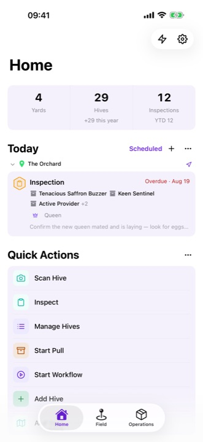
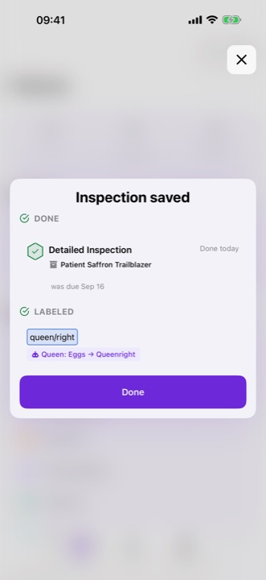
Install the nuc. The follow-up is already scheduled. TODAY
Set up the nuc you just bought and a detailed inspection lands on your list for a week out. You didn't create the hive and then create the inspection; one save did both.
That isn't the app deciding for you. It's an automation, one of a starter set you can add to, edit, or delete to match how you run your operation. Want hives labeled a certain way based on what you observe? An automation can do that too. Fewer taps between what you saw and what happens next.
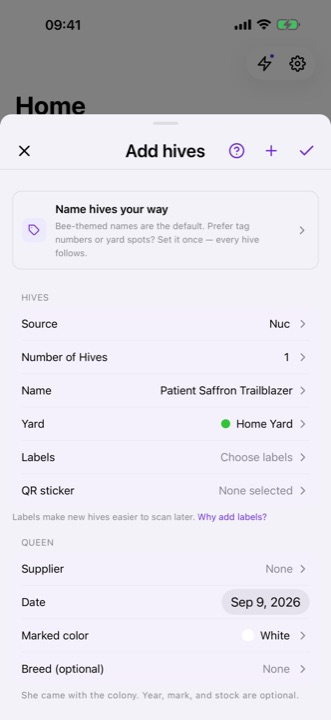
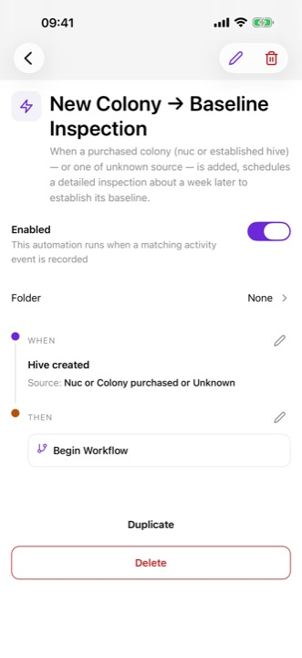
Queen rearing, so you can remember that time you got 100% take TODAY
From the graft to the mating nuc to the hive she heads, and on to the day you sell her, buzZza tracks every queen. The calendar shows when a cell will hatch, when to cage her if you want the virgin, and once you place her, when to come back to check that she's laying a good pattern, and when to give up on her before the colony goes to laying workers.
Every batch keeps its graft count and its take. Split now, buy queens later, and place a whole batch into queenless nucs in one pass.
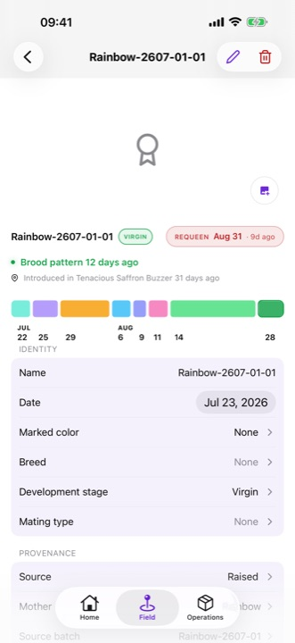
Honey crop, from escapes to the bucket TODAY
Move your supers through your process and keep the record: on escapes, drying, ready, into the extractor. Moisture readings along the way, real yields at the end. Come extraction day, you know what came from where.
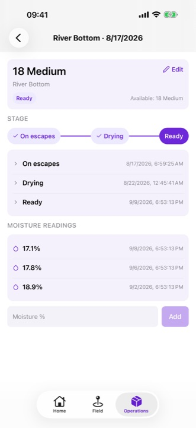
No two operations run the same way TODAY
The list of things you can record is not fixed. Write your own, and the app treats it like one of ours: it lands on the hive, and a rule can follow it.
The actions are yours to write
Add the ones you run, edit the ones that ship, and delete the ones you will never touch. If it has a value, give it one: a count, a dose, a rating, a list to pick from.
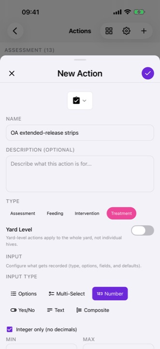
Record it, and the hive remembers
An action you wrote sits in the inspection beside the ones that ship, and its latest reading stays on the hive: four strips in, and when.
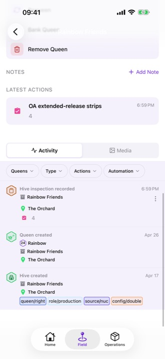
And the rules follow them
An action you added can set off a rule exactly like one of ours. Strips go in; six weeks later a To Do says pull them.
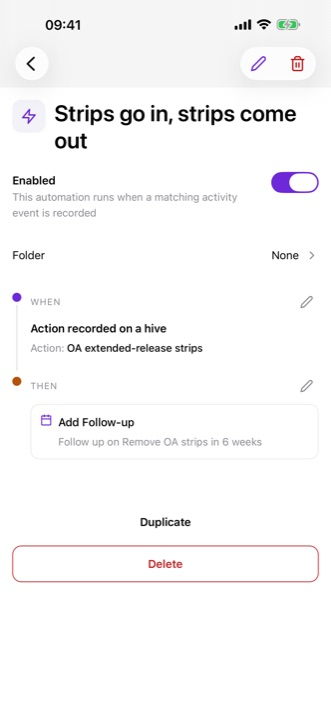
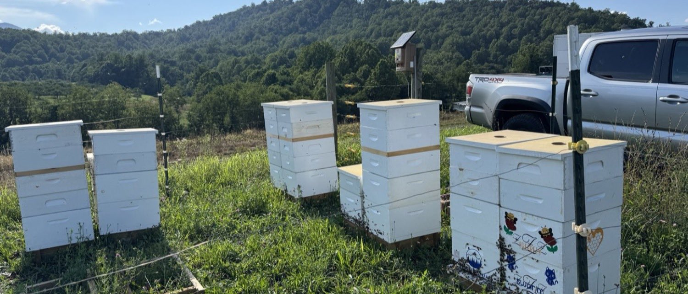
It works out here
Everything lives on your phone, so an out-yard with no bars is a normal day. Open the app, work the hives, drive home. Nothing to sync, nothing to time out, nothing to lose because the signal dropped.
What's blooming, what's coming
Weather at the yard
Current conditions and a 16-day forecast on every yard screen, and records stamped with the weather they were made in.
The bloom calendar
Your yard's own forage calendar. Log "sourwood started early" in one tap, and when you pull, buzZza suggests what the honey likely is, for you to confirm.
An early heads-up on the flow
The weather, your yard's bloom calendar, and your own past seasons, read together, so you hear the flow could start early while there's still time to get supers on.
An assistant that has read your logbook PREMIUM
Ask for advice, talk through a plan, or log the day's work out loud, with an assistant that can read your records and act on them, with your approval before anything lands. "What's happening at the home yard?" "Which hives haven't had a mite count since July?"
Don't want to share your records with an AI? Then don't. It will never be required.
Unlimited hives.
Unlimited yards.
On your device, free.
Install it and run your operation. No sign-up, no account, and no bill for keeping your own logbook. Back it up to a real file whenever you like, and restore it whole; the records are yours to hold.
We do intend to make money, on the things that add value beyond a logbook: your records on every device at once, the early heads-up on the flow, the assistant. Those will be premium. The logbook is not one of them.
And the everyday
- QR codes: scan one to open the hive, scan a handful to work on just those
- Every queen on the books: year, mark, breed, and why she left
- One-tap swarm reports: what left, what stayed, what you made of the cells
- Deadout reports that keep the lesson: cause, equipment, on the record
- Photos on everything; each hive wears its own
- Pinnable notes, labels, and your own hive-naming scheme
- Your buttons, in your order: hives, yards, and queens each carry an action set you arrange and trim
- Separate books for your bees and the club's
- English, Spanish, French · pounds or kilos · light or dark
- PLANNED The whole operation on one map
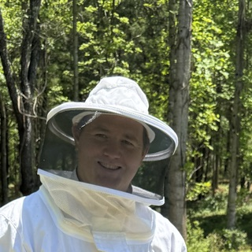
There are a lot of beekeeping apps. This one is mine.
I'm building the app I want to run my own operation on: as few taps, screens, and transitions as possible between seeing something in the yard and having it logged, with the scheduling that falls out of what I saw handled for me.
I want to keep 300 hives and my day job. This is how I see that being possible.
-- David
Your bees are already keeping records.
Start reading them.
No account. No signal. No subscription to keep your own records.